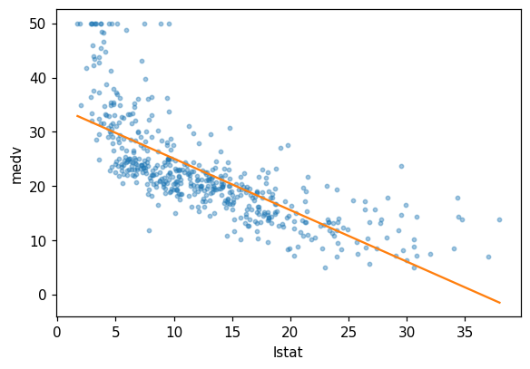
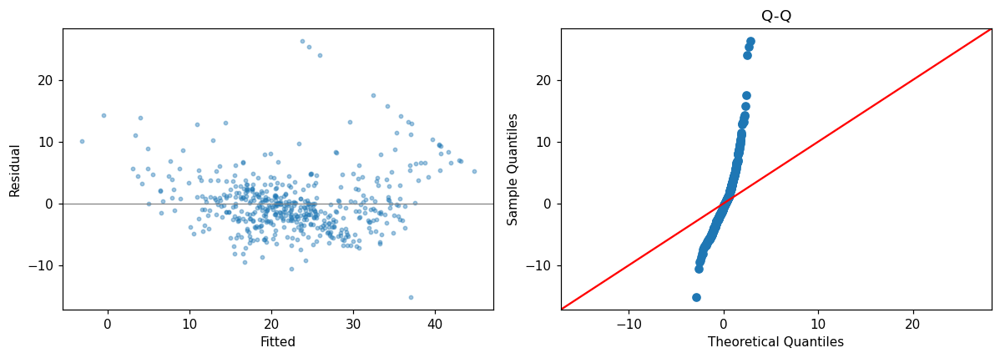
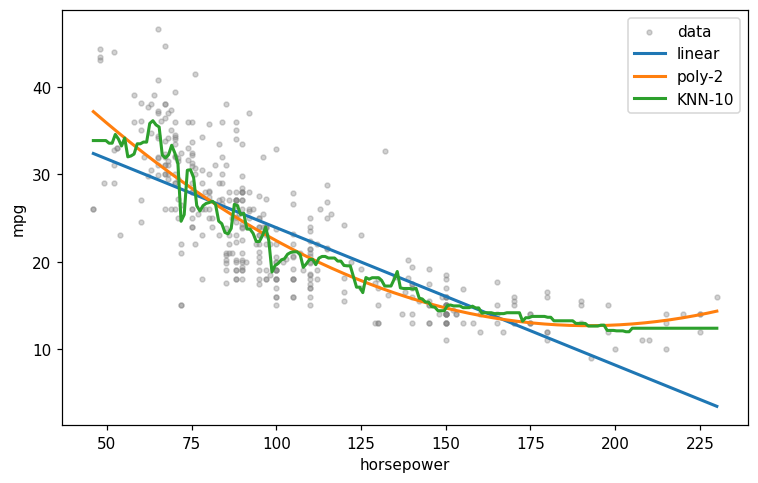

This notebook runs on Colab as-is. The badge link above and the GITHUB_RAW line in the setup cell already point to this repository, so everything installs and loads automatically.
Chapter 3 — Linear Regression¶
Lab: simple and multiple regression, diagnostics, KNN comparison¶
Course: Quantitative Research Methods
Instructor: Prof. Dr. Christoph Weisser
Source: James, Witten, Hastie, Tibshirani & Taylor (2023), An Introduction to Statistical Learning, with Applications in Python, Springer. Companion code at statlearning.com.
Goal. Fit linear regressions on the Boston data with statsmodels, interpret coefficients, run diagnostics, and compare with KNN regression.
Setup¶
Run this cell once. The ISLP package can be installed with pip install ISLP. As an alternative, the same data sets are available as CSVs in the workspace’s ALL CSV FILES - 2nd Edition folder.
Google Colab: this notebook also runs on Colab out of the box — the setup cell below installs any missing packages and downloads the data automatically.
# --- Setup: runs locally AND on Google Colab --------------------------------
# Silence only the spurious 'encountered in matmul' RuntimeWarnings that the macOS
# Accelerate BLAS emits; real warnings (deprecations, model caveats) stay visible.
import warnings
warnings.filterwarnings('ignore', message='.*encountered in matmul', category=RuntimeWarning)
import importlib.util, os, subprocess, sys
IN_COLAB = 'google.colab' in sys.modules
def _ensure(pkg, import_name=None):
"""pip-install pkg (quietly) if its import is missing."""
if importlib.util.find_spec(import_name or pkg) is None:
subprocess.run([sys.executable, '-m', 'pip', 'install', '-q', pkg], check=False)
if IN_COLAB: # Colab ships numpy/pandas/sklearn/statsmodels; add course extras
for _pkg, _imp in [('ISLP', 'ISLP')]:
_ensure(_pkg, _imp)
import numpy as np
import pandas as pd
import matplotlib.pyplot as plt
rng = np.random.default_rng(2024)
plt.rcParams['figure.dpi'] = 110
try:
from ISLP import load_data
HAVE_ISLP = True
except ImportError:
HAVE_ISLP = False
print('ISLP not installed; using CSV / URL fallbacks.')
# Local CSV location (repo layout first, then legacy paths, then a data/ cache).
_CANDIDATES = ['../ALL CSV FILES - 2nd Edition',
'ALL CSV FILES - 2nd Edition',
'../../ALL CSV FILES - 2nd Edition', 'data']
CSV = next((p for p in _CANDIDATES if os.path.isdir(p)), 'data')
# GITHUB_RAW lets a fresh Colab runtime fetch any
# CSV that is neither in ISLP nor already local (spaces in the folder -> %20).
GITHUB_RAW = ('https://raw.githubusercontent.com/ChrisW09/Quantitative-Research-Methods/main/'
'ALL%20CSV%20FILES%20-%202nd%20Edition')
# The four datasets NOT in the ISLP package -> load from the book's official
# site so the notebook works on a fresh Colab even before the repo is published.
KNOWN_URLS = {
'Advertising': 'https://www.statlearning.com/s/Advertising.csv',
'Heart': 'https://www.statlearning.com/s/Heart.csv',
'Income1': 'https://www.statlearning.com/s/Income1.csv',
'Income2': 'https://www.statlearning.com/s/Income2.csv',
}
def load(name, **read_csv_kwargs):
"""Load a course dataset. Order: ISLP package -> R datasets -> local CSV
-> official book URL -> your GitHub repo. Works locally and on Colab."""
if HAVE_ISLP:
try:
return load_data(name)
except Exception:
pass
if name == 'USArrests': # classic R dataset, not in ISLP
try:
import statsmodels.api as sm
return sm.datasets.get_rdataset('USArrests', 'datasets').data
except Exception:
pass
path = f'{CSV}/{name}.csv'
if os.path.exists(path): # running from the repo (local)
return pd.read_csv(path, **read_csv_kwargs)
remotes = ([KNOWN_URLS[name]] if name in KNOWN_URLS else []) + [f'{GITHUB_RAW}/{name}.csv']
for url in remotes: # fresh Colab: stream over https
try:
return pd.read_csv(url, **read_csv_kwargs)
except Exception:
continue
raise FileNotFoundError(
f"Could not load {name!r}. Put the CSV in '{CSV}/' or check your connection for the GITHUB_RAW fallback.")
1. Simple linear regression¶
import statsmodels.api as sm
Boston = load('Boston', index_col=0) # CSV carries a row-number column
X = sm.add_constant(Boston['lstat'])
y = Boston['medv']
res = sm.OLS(y, X).fit()
print(res.summary())
OLS Regression Results
==============================================================================
Dep. Variable: medv R-squared: 0.544
Model: OLS Adj. R-squared: 0.543
Method: Least Squares F-statistic: 601.6
Date: Sun, 19 Jul 2026 Prob (F-statistic): 5.08e-88
Time: 14:31:46 Log-Likelihood: -1641.5
No. Observations: 506 AIC: 3287.
Df Residuals: 504 BIC: 3295.
Df Model: 1
Covariance Type: nonrobust
==============================================================================
coef std err t P>|t| [0.025 0.975]
------------------------------------------------------------------------------
const 34.5538 0.563 61.415 0.000 33.448 35.659
lstat -0.9500 0.039 -24.528 0.000 -1.026 -0.874
==============================================================================
Omnibus: 137.043 Durbin-Watson: 0.892
Prob(Omnibus): 0.000 Jarque-Bera (JB): 291.373
Skew: 1.453 Prob(JB): 5.36e-64
Kurtosis: 5.319 Cond. No. 29.7
==============================================================================
Notes:
[1] Standard Errors assume that the covariance matrix of the errors is correctly specified.
Read off: coefficient, standard error, \(t\), \(p\)-value, 95% CI, RSE (Scale), \(R^2\), \(F\)-test.
Confidence and prediction intervals¶
xnew = pd.DataFrame({'const': 1.0, 'lstat': [5, 10, 15]})
pred = res.get_prediction(xnew)
pred.summary_frame(alpha=0.05)
| mean | mean_se | mean_ci_lower | mean_ci_upper | obs_ci_lower | obs_ci_upper | |
|---|---|---|---|---|---|---|
| 0 | 29.803594 | 0.405247 | 29.007412 | 30.599776 | 17.565675 | 42.041513 |
| 1 | 25.053347 | 0.294814 | 24.474132 | 25.632563 | 12.827626 | 37.279068 |
| 2 | 20.303101 | 0.290893 | 19.731588 | 20.874613 | 8.077742 | 32.528459 |
mean_ci_* is the CI for \(E[Y \mid X]\); obs_ci_* is the wider prediction interval.
Plotting the line¶
x_grid = np.linspace(Boston['lstat'].min(),
Boston['lstat'].max(), 100)
Xg = sm.add_constant(x_grid)
yhat = res.predict(Xg)
fig, ax = plt.subplots(figsize=(6, 4))
ax.scatter(Boston['lstat'], Boston['medv'], s=8, alpha=0.4)
ax.plot(x_grid, yhat, color='C1')
ax.set(xlabel='lstat', ylabel='medv'); plt.show()

2. Multiple linear regression¶
predictors = ['lstat', 'age', 'rm', 'ptratio', 'tax']
X = sm.add_constant(Boston[predictors])
res = sm.OLS(Boston['medv'], X).fit()
print(res.summary())
OLS Regression Results
==============================================================================
Dep. Variable: medv R-squared: 0.682
Model: OLS Adj. R-squared: 0.679
Method: Least Squares F-statistic: 214.5
Date: Sun, 19 Jul 2026 Prob (F-statistic): 6.61e-122
Time: 14:31:46 Log-Likelihood: -1550.3
No. Observations: 506 AIC: 3113.
Df Residuals: 500 BIC: 3138.
Df Model: 5
Covariance Type: nonrobust
==============================================================================
coef std err t P>|t| [0.025 0.975]
------------------------------------------------------------------------------
const 18.1966 3.971 4.582 0.000 10.394 25.999
lstat -0.5941 0.053 -11.129 0.000 -0.699 -0.489
age 0.0211 0.011 1.935 0.054 -0.000 0.043
rm 4.4245 0.436 10.146 0.000 3.568 5.281
ptratio -0.8744 0.125 -6.992 0.000 -1.120 -0.629
tax -0.0031 0.002 -1.714 0.087 -0.007 0.000
==============================================================================
Omnibus: 207.182 Durbin-Watson: 0.923
Prob(Omnibus): 0.000 Jarque-Bera (JB): 1069.257
Skew: 1.743 Prob(JB): 6.51e-233
Kurtosis: 9.210 Cond. No. 7.71e+03
==============================================================================
Notes:
[1] Standard Errors assume that the covariance matrix of the errors is correctly specified.
[2] The condition number is large, 7.71e+03. This might indicate that there are
strong multicollinearity or other numerical problems.
Multiple regression with all predictors¶
X = sm.add_constant(Boston.drop(columns='medv'))
res_full = sm.OLS(Boston['medv'], X).fit()
print(res_full.summary())
OLS Regression Results
==============================================================================
Dep. Variable: medv R-squared: 0.734
Model: OLS Adj. R-squared: 0.728
Method: Least Squares F-statistic: 113.5
Date: Sun, 19 Jul 2026 Prob (F-statistic): 2.23e-133
Time: 14:31:46 Log-Likelihood: -1504.9
No. Observations: 506 AIC: 3036.
Df Residuals: 493 BIC: 3091.
Df Model: 12
Covariance Type: nonrobust
==============================================================================
coef std err t P>|t| [0.025 0.975]
------------------------------------------------------------------------------
const 41.6173 4.936 8.431 0.000 31.919 51.316
crim -0.1214 0.033 -3.678 0.000 -0.186 -0.057
zn 0.0470 0.014 3.384 0.001 0.020 0.074
indus 0.0135 0.062 0.217 0.829 -0.109 0.136
chas 2.8400 0.870 3.264 0.001 1.131 4.549
nox -18.7580 3.851 -4.870 0.000 -26.325 -11.191
rm 3.6581 0.420 8.705 0.000 2.832 4.484
age 0.0036 0.013 0.271 0.787 -0.023 0.030
dis -1.4908 0.202 -7.394 0.000 -1.887 -1.095
rad 0.2894 0.067 4.325 0.000 0.158 0.421
tax -0.0127 0.004 -3.337 0.001 -0.020 -0.005
ptratio -0.9375 0.132 -7.091 0.000 -1.197 -0.678
lstat -0.5520 0.051 -10.897 0.000 -0.652 -0.452
==============================================================================
Omnibus: 171.096 Durbin-Watson: 1.077
Prob(Omnibus): 0.000 Jarque-Bera (JB): 709.937
Skew: 1.477 Prob(JB): 6.90e-155
Kurtosis: 7.995 Cond. No. 1.17e+04
==============================================================================
Notes:
[1] Standard Errors assume that the covariance matrix of the errors is correctly specified.
[2] The condition number is large, 1.17e+04. This might indicate that there are
strong multicollinearity or other numerical problems.
3. Polynomials and interactions via the ISLP ModelSpec¶
if HAVE_ISLP:
from ISLP.models import ModelSpec as MS, poly
terms = [poly('lstat', degree=2), 'age', ('lstat', 'age')]
design = MS(terms).fit_transform(Boston)
res2 = sm.OLS(Boston['medv'], design).fit()
print(res2.summary())
else:
B2 = Boston.copy() # copy: do not add columns to Boston itself,
B2['lstat2'] = B2['lstat']**2 # they would leak into the
B2['lstat_age'] = B2['lstat'] * B2['age'] # VIF and KNN cells below
X = sm.add_constant(B2[['lstat', 'lstat2', 'age', 'lstat_age']])
res2 = sm.OLS(B2['medv'], X).fit()
print(res2.summary())
OLS Regression Results
==============================================================================
Dep. Variable: medv R-squared: 0.681
Model: OLS Adj. R-squared: 0.678
Method: Least Squares F-statistic: 267.2
Date: Sun, 19 Jul 2026 Prob (F-statistic): 9.69e-123
Time: 14:31:46 Log-Likelihood: -1551.3
No. Observations: 506 AIC: 3113.
Df Residuals: 501 BIC: 3134.
Df Model: 4
Covariance Type: nonrobust
============================================================================================
coef std err t P>|t| [0.025 0.975]
--------------------------------------------------------------------------------------------
intercept 20.5005 0.992 20.659 0.000 18.551 22.450
poly(lstat, degree=2)[0] -71.4385 25.246 -2.830 0.005 -121.040 -21.837
poly(lstat, degree=2)[1] 86.0615 6.141 14.015 0.000 73.997 98.126
age 0.1439 0.020 7.279 0.000 0.105 0.183
lstat:age -0.0079 0.002 -4.424 0.000 -0.011 -0.004
==============================================================================
Omnibus: 74.685 Durbin-Watson: 1.072
Prob(Omnibus): 0.000 Jarque-Bera (JB): 154.447
Skew: 0.819 Prob(JB): 2.90e-34
Kurtosis: 5.155 Cond. No. 1.39e+05
==============================================================================
Notes:
[1] Standard Errors assume that the covariance matrix of the errors is correctly specified.
[2] The condition number is large, 1.39e+05. This might indicate that there are
strong multicollinearity or other numerical problems.
4. Diagnostics¶
fig, axes = plt.subplots(1, 2, figsize=(11, 4))
axes[0].scatter(res_full.fittedvalues, res_full.resid, s=8, alpha=0.4)
axes[0].axhline(0, color='grey', lw=0.8)
axes[0].set(xlabel='Fitted', ylabel='Residual')
sm.qqplot(res_full.resid, line='45', ax=axes[1])
axes[1].set_title('Q-Q')
plt.tight_layout(); plt.show()

from statsmodels.stats.outliers_influence import variance_inflation_factor
X = sm.add_constant(Boston.drop(columns='medv'))
vifs = pd.Series(
[variance_inflation_factor(X.values, j) for j in range(X.shape[1])],
index=X.columns)
vifs.round(2)
const 535.53
crim 1.77
zn 2.30
indus 3.99
chas 1.07
nox 4.37
rm 1.91
age 3.09
dis 3.95
rad 7.45
tax 9.00
ptratio 1.80
lstat 2.87
dtype: float64
5. Comparison with KNN¶
from sklearn.neighbors import KNeighborsRegressor
from sklearn.preprocessing import StandardScaler
from sklearn.model_selection import train_test_split
from sklearn.metrics import mean_squared_error
X = Boston.drop(columns='medv').values
y = Boston['medv'].values
Xtr, Xte, ytr, yte = train_test_split(X, y, test_size=0.3, random_state=0)
scaler = StandardScaler().fit(Xtr)
lr = sm.OLS(ytr, sm.add_constant(Xtr)).fit()
lin_mse = mean_squared_error(yte, lr.predict(sm.add_constant(Xte)))
knn_mse = []
for k in [1, 3, 5, 10, 25, 50]:
m = KNeighborsRegressor(n_neighbors=k).fit(scaler.transform(Xtr), ytr)
knn_mse.append(mean_squared_error(yte, m.predict(scaler.transform(Xte))))
print('linear test MSE:', round(lin_mse, 2))
print('KNN MSEs :', [round(x, 2) for x in knn_mse])
linear test MSE: 28.15
KNN MSEs : [25.46, 28.64, 29.24, 29.66, 34.1, 39.09]
Lecture exercises — worked Python solutions¶
The chapter-3 slide deck contains six [Python]-tagged exercises. This section works through each of them with fully commented, runnable code. Everything uses the load() helper from the Setup cell (run that first); the printed numbers match the ones quoted on the solution slides.
Exercise 3.4 — Multiple OLS on Advertising [Python]¶
(Slide: “Exercise 3.4 — Multiple OLS on Advertising [Python]”)
Using statsmodels, fit sales ~ TV + radio + newspaper on the Advertising data.
Fit the model and print the summary.
Given the estimated coefficients (intercept 2.94, TV 0.0458, radio 0.189, newspaper −0.001), interpret the TV and radio slopes.
Newspaper has a large \(p\)-value. What do you conclude, and how much extra sales does $1000 of radio buy?
import statsmodels.api as sm
# Advertising is not part of the ISLP package, so load() falls back to the
# CSV; its first (unnamed) column is just the row number -> index_col=0.
ad = load('Advertising', index_col=0)
# (1) Design matrix: the three media budgets plus an intercept column.
X_ad = sm.add_constant(ad[['TV', 'radio', 'newspaper']])
res_ad = sm.OLS(ad['sales'], X_ad).fit() # least-squares fit of the full model
print(res_ad.summary())
# Expected (matches the slide):
# const 2.9389 | TV 0.0458 (p<.001) | radio 0.1885 (p<.001)
# newspaper -0.0010 (p = 0.860, CI straddles 0)
# R-squared 0.897 | F-statistic 570.3
OLS Regression Results
==============================================================================
Dep. Variable: sales R-squared: 0.897
Model: OLS Adj. R-squared: 0.896
Method: Least Squares F-statistic: 570.3
Date: Sun, 19 Jul 2026 Prob (F-statistic): 1.58e-96
Time: 14:31:47 Log-Likelihood: -386.18
No. Observations: 200 AIC: 780.4
Df Residuals: 196 BIC: 793.6
Df Model: 3
Covariance Type: nonrobust
==============================================================================
coef std err t P>|t| [0.025 0.975]
------------------------------------------------------------------------------
const 2.9389 0.312 9.422 0.000 2.324 3.554
TV 0.0458 0.001 32.809 0.000 0.043 0.049
radio 0.1885 0.009 21.893 0.000 0.172 0.206
newspaper -0.0010 0.006 -0.177 0.860 -0.013 0.011
==============================================================================
Omnibus: 60.414 Durbin-Watson: 2.084
Prob(Omnibus): 0.000 Jarque-Bera (JB): 151.241
Skew: -1.327 Prob(JB): 1.44e-33
Kurtosis: 6.332 Cond. No. 454.
==============================================================================
Notes:
[1] Standard Errors assume that the covariance matrix of the errors is correctly specified.
Interpretation. Holding the other media fixed, an extra $1,000 of TV spend is associated with about \(0.0458 \times 1000 \approx 46\) additional units sold; an extra $1,000 of radio with about \(0.189 \times 1000 \approx 189\) units. Newspaper’s slope is essentially zero with \(p = 0.86\) and a 95% CI that straddles 0: once TV and radio are in the model, newspaper adds no detectable predictive value. $1000 of radio buys roughly 189 extra units — far more per dollar than the tiny, non-significant newspaper effect. The model explains about 90% of the variance in sales (\(R^2 \approx 0.897\)).
Common mistake: reading the near-zero newspaper slope as “newspaper advertising can never work” — the model only says newspaper adds nothing beyond TV and radio in these markets.
Extended Exercise 3.L3 — Multiple regression on Advertising [Python]¶
(Slide: “Extended Exercise 3.L3 — Multiple regression on Advertising [Python]”)
Fit
sales ~ TV + radio + newspaperand read the summary: interpret each slope, the overall \(F\)-test, and \(R^2\) vs adjusted \(R^2\).In a simple regression
sales ~ newspaperthe newspaper slope is significant, yet in the multiple model it is not. Explain the apparent contradiction (confounding).Drop newspaper and refit. Compare coefficients, \(R^2\) and RSE. Which model do you keep, and why?
# (1) Full model -- compact printout of the numbers quoted on the slide.
res_full3 = sm.OLS(ad['sales'],
sm.add_constant(ad[['TV', 'radio', 'newspaper']])).fit()
rse_full = np.sqrt(res_full3.mse_resid) # residual standard error
print(res_full3.params.round(4)) # const 2.9389 | TV 0.0458
# radio 0.1885 | news -0.0010
print(f'R2 = {res_full3.rsquared:.3f} adj-R2 = {res_full3.rsquared_adj:.3f}')
print(f'F = {res_full3.fvalue:.1f} (p = {res_full3.f_pvalue:.2e}) RSE = {rse_full:.3f}')
# R2 = 0.897, adj-R2 = 0.896, F = 570.3 (p = 1.58e-96), RSE = 1.686
# (2) The confounding ingredients: newspaper looks useful on its own ...
simple_news = sm.OLS(ad['sales'], sm.add_constant(ad['newspaper'])).fit()
print(f"\nsimple newspaper slope = {simple_news.params['newspaper']:.4f}"
f" (p = {simple_news.pvalues['newspaper']:.4f})") # 0.0547 (p = 0.0011)
# ... because newspaper spend travels together with radio spend:
print(f"cor(radio, newspaper) = {ad['radio'].corr(ad['newspaper']):.3f}") # 0.354
const 2.9389
TV 0.0458
radio 0.1885
newspaper -0.0010
dtype: float64
R2 = 0.897 adj-R2 = 0.896
F = 570.3 (p = 1.58e-96) RSE = 1.686
simple newspaper slope = 0.0547 (p = 0.0011)
cor(radio, newspaper) = 0.354
# (3) Drop newspaper and refit the two-predictor model.
res_2pred = sm.OLS(ad['sales'], sm.add_constant(ad[['TV', 'radio']])).fit()
rse_2 = np.sqrt(res_2pred.mse_resid)
print(res_2pred.params.round(4)) # const 2.9211 | TV 0.0458 | radio 0.1880
print(f'R2 = {res_2pred.rsquared:.3f} adj-R2 = {res_2pred.rsquared_adj:.4f}'
f' RSE = {rse_2:.3f}')
# R2 = 0.897 (unchanged) | adj-R2 = 0.8962 | RSE = 1.686 -> 1.681
const 2.9211
TV 0.0458
radio 0.1880
dtype: float64
R2 = 0.897 adj-R2 = 0.8962 RSE = 1.681
Interpretation. (1) Holding the others fixed, $1000 more on TV adds ≈ 46 units of sales and $1000 more on radio ≈ 189 units; newspaper is ≈ 0 (\(p = 0.86\)). The \(F\)-statistic of 570 with a vanishing \(p\)-value decisively rejects \(H_0\): all three slopes are zero — at least one medium matters. \(R^2 = 0.897\) and adjusted \(R^2 = 0.896\) nearly coincide because there are only three predictors. (2) Alone, newspaper has slope 0.055 (\(p = 0.001\)) — but only because markets with big radio budgets also buy more newspaper (correlation ≈ 0.35). In the simple regression newspaper acts as a proxy for radio and borrows its effect; once radio enters the model, newspaper’s coefficient collapses to zero. Textbook confounding. (3) Dropping newspaper leaves the TV and radio slopes and \(R^2\) essentially unchanged while the RSE improves slightly (1.686 → 1.681). Keep the two-predictor model: it is simpler, loses no explanatory power, and both adjusted \(R^2\) and RSE — the measures that penalise useless predictors — favour it.
Exercise 3.9 — Polynomial fit on Auto [Python]¶
(Slide: “Exercise 3.9 — Polynomial fit on Auto [Python]”)
Model mpg against horsepower on the Auto data.
Fit a linear model and a quadratic (degree-2) model with
statsmodels.The linear fit gives \(R^2 \approx 0.606\); the quadratic gives \(R^2 \approx 0.688\) with a highly significant
horsepower\(^2\) term. What does this tell you about the relationship?Why is the quadratic model still called a linear model?
# In the raw CSV, missing horsepower is coded as the string "?", so
# na_values='?' turns it into NaN and dropna() removes those five rows.
# (If the ISLP package supplies the data instead, it is already clean.)
Auto = load('Auto', na_values='?').dropna()
hp = Auto['horsepower'].astype(float) # ensure a numeric predictor
# (1) Linear model: mpg ~ horsepower.
X_lin = sm.add_constant(hp)
m_lin = sm.OLS(Auto['mpg'], X_lin).fit()
# Quadratic model: mpg ~ horsepower + horsepower^2 -- the squared term is
# simply one more column in the design matrix.
X_quad = sm.add_constant(np.column_stack([hp, hp**2]))
m_quad = sm.OLS(Auto['mpg'], X_quad).fit()
print(f'linear R2 = {m_lin.rsquared:.3f}') # 0.606
print(f'quadratic R2 = {m_quad.rsquared:.3f}') # 0.688
print(f'hp^2 term: t = {m_quad.tvalues.iloc[-1]:.1f}, p = {m_quad.pvalues.iloc[-1]:.1e}')
# hp^2 term: t = 10.1, p = 2.2e-21 -> highly significant curvature
linear R2 = 0.606
quadratic R2 = 0.688
hp^2 term: t = 10.1, p = 2.2e-21
Interpretation. (2) The jump from \(R^2 \approx 0.606\) to \(0.688\) together with the hugely significant squared term (\(t \approx 10\)) shows the relationship is curved, not straight: mpg falls steeply as horsepower rises from low values, then flattens. A straight line systematically under- and over-predicts (a U-shaped residual pattern), which the quadratic corrects. (3) The model is still linear in the parameters \(\beta_0, \beta_1, \beta_2\) — horsepower\(^2\) is treated as just another predictor column, so ordinary least squares applies unchanged.
Common mistake: justifying the quadratic by the \(R^2\) increase alone — \(R^2\) never decreases when a term is added; the evidence is the \(t\)-test on the new term plus the disappearance of the U-shape in the residual plot.
Exercise 3.11 — Leverage and outliers [Python]¶
(Slide: “Exercise 3.11 — Leverage and outliers [Python]”)
Fit medv ~ lstat on the Boston data.
Extract the leverage (hat) values and the studentized residuals.
Flag high-leverage points using the rule \(h_{ii} > 2(p+1)/n\) and outliers as \(|\text{studentized residual}| > 3\).
In one sentence each, explain what leverage and a studentized residual measure.
Boston = load('Boston', index_col=0) # CSV carries a row-number column
# Fit the simple regression medv ~ lstat.
X_b = sm.add_constant(Boston['lstat'])
res_b = sm.OLS(Boston['medv'], X_b).fit()
# (1) Influence diagnostics: leverage h_ii and studentized residuals.
infl = res_b.get_influence() # influence-diagnostics object
lev = infl.hat_matrix_diag # leverage values h_ii
stud = infl.resid_studentized_external # leave-one-out studentized resid.
# (2) Apply the two rules of thumb.
n, p = X_b.shape[0], X_b.shape[1] - 1 # n = 506 tracts, p = 1 predictor
thr = 2 * (p + 1) / n # average leverage is (p+1)/n
high_lev = np.where(lev > thr)[0] # positions above the cut-off
outliers = np.where(np.abs(stud) > 3)[0] # positions with |t_i| > 3
print(f'leverage cut-off = {thr:.4f}') # 0.0079
print(f'{len(high_lev)} high-leverage tracts') # 34
print(f'{len(outliers)} outliers, max |stud| = {np.abs(stud).max():.1f}') # 11, 4.0
print('medv of the flagged outliers:', Boston['medv'].to_numpy()[outliers])
# mostly 50.0 -- the censored top value of medv
leverage cut-off = 0.0079
34 high-leverage tracts
11 outliers, max |stud| = 4.0
medv of the flagged outliers: [50. 50. 50. 50. 50. 48.8 50. 50. 50. 50. 50. ]
Interpretation. (3) Leverage \(h_{ii}\) measures how unusual an observation’s predictor value is; its average is \((p+1)/n\), hence the \(2(p+1)/n\) flag. The 34 flagged tracts are exactly the largest-lstat neighbourhoods. A studentized residual is the residual divided by its estimated (leave-one-out) standard deviation, flagging unusual response values on a comparable scale: the 11 outliers (max ≈ 4.0) are all expensive tracts, mostly at the censored top value medv = 50, which the line under-predicts. Here the two sets do not overlap — leverage and outlyingness are different pathologies, and a point high on both would be the most influential kind.
Common mistake: treating the thresholds as deletion rules. Flagged points call for inspection (data error? capped response?) and a with/without sensitivity refit — not automatic removal.
Exercise 3.12 — Collinearity and VIF [Python]¶
(Slide: “Exercise 3.12 — Collinearity and VIF [Python]”)
On the Credit data, limit and rating are almost perfectly correlated.
Compute the variance inflation factor (VIF) for the predictors
limit,ratingandagein a regression ofbalance.You should obtain roughly VIF(limit) ≈ 160, VIF(rating) ≈ 161, VIF(age) ≈ 1.0. What does VIF measure, and what is the consequence of these large values?
Suggest two fixes.
from statsmodels.stats.outliers_influence import variance_inflation_factor as vif_
Credit = load('Credit') # column names are capitalised
X_c = sm.add_constant(Credit[['Limit', 'Rating', 'Age']])
# (1) VIF_j = 1 / (1 - R2 from regressing predictor j on the other predictors).
vifs = {col: vif_(X_c.values, i) for i, col in enumerate(X_c.columns)}
for col in ['Limit', 'Rating', 'Age']: # skip the intercept column
print(f'VIF({col}) = {vifs[col]:.2f}')
# VIF(Limit) = 160.59 | VIF(Rating) = 160.67 | VIF(Age) = 1.01
# The culprit: limit and rating are near-duplicates of each other.
print(f"cor(Limit, Rating) = {Credit['Limit'].corr(Credit['Rating']):.4f}") # 0.9969
VIF(Limit) = 160.59
VIF(Rating) = 160.67
VIF(Age) = 1.01
cor(Limit, Rating) = 0.9969
Interpretation. (2) \(\mathrm{VIF}(\hat\beta_j) = 1/(1-R_j^2)\), where \(R_j^2\) comes from regressing predictor \(j\) on all the others. It is the factor by which collinearity inflates the variance of \(\hat\beta_j\): VIF = 1 means no collinearity, values above ≈ 5–10 are concerning. Here VIF ≈ 160 means the standard errors of the limit and rating coefficients are about \(\sqrt{160} \approx 13\) times larger than they would be if the two were uncorrelated — hugely inflated SEs, unstable and possibly wrong-signed coefficients, and low power to detect either effect, even though jointly the pair predicts balance well. age (VIF ≈ 1.0) is unaffected. (3) Fixes: drop one of the redundant predictors (keep limit or rating, since they carry nearly the same information), or combine them into a single index (e.g. an average or first principal component); a penalised method such as ridge regression also tolerates collinearity.
Extended Exercise 3.L6 — Linear vs polynomial vs KNN [Python]¶
(Slide: “Extended Exercise 3.L6 — Linear vs polynomial vs KNN [Python]”)
On the Auto data, model mpg ~ horsepower (drop the rows where horsepower is the string "?").
Make a 70/30 split (
random_state=1) and fit three models: linear, degree-2 polynomial, and KNN regression (standardise \(x\) first).Estimate the test MSE of each.
Which fits best, and why? Answer in terms of the bias–variance trade-off, and say what happens to KNN as \(K \to 1\).
from sklearn.model_selection import train_test_split
from sklearn.linear_model import LinearRegression
from sklearn.preprocessing import PolynomialFeatures, StandardScaler
from sklearn.pipeline import make_pipeline
from sklearn.neighbors import KNeighborsRegressor
from sklearn.metrics import mean_squared_error
# (1) Load and clean (self-contained): "?" -> NaN -> drop those rows.
Auto2 = load('Auto', na_values='?').dropna()
X_a = Auto2[['horsepower']].astype(float).to_numpy() # sklearn wants 2-D X
y_a = Auto2['mpg'].to_numpy()
X_tr, X_te, y_tr, y_te = train_test_split(X_a, y_a, test_size=0.3,
random_state=1) # 70/30 split
lin_m = LinearRegression().fit(X_tr, y_tr) # straight line
poly_m = make_pipeline(PolynomialFeatures(2),
LinearRegression()).fit(X_tr, y_tr) # adds hp^2
knn_m = make_pipeline(StandardScaler(),
KNeighborsRegressor(10)).fit(X_tr, y_tr) # scale, K=10
# (2) Test-set mean squared error of each model.
for name, m in [('linear', lin_m), ('poly-2', poly_m), ('KNN-10', knn_m)]:
print(f'{name:7s} test MSE = {mean_squared_error(y_te, m.predict(X_te)):.1f}')
# linear 26.2 | poly-2 19.8 | KNN-10 21.1 (matches the slide)
linear test MSE = 26.2
poly-2 test MSE = 19.8
KNN-10 test MSE = 21.1
# (3a) Both sides of the trade-off: shrink K towards 1, then push it far up.
for K in [1, 2, 5, 10, 25, 50, 100, 200]:
m = make_pipeline(StandardScaler(),
KNeighborsRegressor(K)).fit(X_tr, y_tr)
print(f'K = {K:3d} test MSE = {mean_squared_error(y_te, m.predict(X_te)):.1f}')
# K = 1 interpolates the training data -- high variance. The grid now runs far
# enough up for the opposite failure to show: K = 200 averages most of the
# training set, so the fit collapses towards the overall mean -- high bias,
# i.e. over-smoothing. Moderate K is best. But note that on this one split
# K = 25 (19.3) edges out the degree-2 polynomial (19.8): a gap far too small
# for a single train/test split to resolve -- (3c) settles it properly.
K = 1 test MSE = 38.4
K = 2 test MSE = 26.8
K = 5 test MSE = 21.8
K = 10 test MSE = 21.1
K = 25 test MSE = 19.3
K = 50 test MSE = 19.4
K = 100 test MSE = 23.9
K = 200 test MSE = 41.1
# (3b) Visualise the three fits over the horsepower range.
grid = np.linspace(X_a.min(), X_a.max(), 200).reshape(-1, 1)
plt.figure(figsize=(7, 4.5))
plt.scatter(X_a, y_a, s=10, alpha=0.35, color='grey', label='data')
for name, m in [('linear', lin_m), ('poly-2', poly_m), ('KNN-10', knn_m)]:
plt.plot(grid, m.predict(grid), lw=2, label=name)
plt.xlabel('horsepower'); plt.ylabel('mpg')
plt.legend(); plt.tight_layout(); plt.show()

# (3c) Decide the comparison by cross-validation, not by one split.
# 10-fold CV re-uses every car as a test case, so it can separate models that
# a single 70/30 split cannot. Shuffling is seeded, so the numbers reproduce.
from sklearn.model_selection import cross_val_score, KFold
cv = KFold(n_splits=10, shuffle=True, random_state=1)
def cv_mse(model):
"""Mean 10-fold CV MSE (cross_val_score returns *negative* MSE) and its
fold-to-fold standard error."""
fold_mse = -cross_val_score(model, X_a, y_a, cv=cv,
scoring='neg_mean_squared_error')
return fold_mse.mean(), fold_mse.std(ddof=1) / np.sqrt(len(fold_mse))
candidates = [('poly-2', make_pipeline(PolynomialFeatures(2), LinearRegression()))]
candidates += [(f'KNN-{K}', make_pipeline(StandardScaler(), KNeighborsRegressor(K)))
for K in [10, 25, 50, 100]]
for name, m in candidates:
mean, se = cv_mse(m)
print(f'{name:7s} 10-fold CV MSE = {mean:4.1f} (std. error {se:.1f})')
poly-2 10-fold CV MSE = 19.2 (std. error 1.7)
KNN-10 10-fold CV MSE = 18.8 (std. error 1.5)
KNN-25 10-fold CV MSE = 18.6 (std. error 1.4)
KNN-50 10-fold CV MSE = 18.2 (std. error 1.5)
KNN-100 10-fold CV MSE = 20.2 (std. error 1.6)
Interpretation. On the single 70/30 split the test MSEs are: linear ≈ 26.2, degree-2 polynomial ≈ 19.8, KNN (\(K=10\)) ≈ 21.1 — both flexible models clearly beat the straight line. The true mpg–horsepower relationship is convex and decreasing, so the straight line underfits: high bias, largest test MSE. As \(K \to 1\), each prediction is a single neighbour: the model interpolates the training points (training MSE → 0) but becomes very wiggly — high variance — so the test MSE rises to ≈ 38.4. Push \(K\) the other way and the opposite failure appears: at \(K = 200\) almost the whole training set is averaged into every prediction, the fit flattens towards the overall mean, and the test MSE climbs to ≈ 41.1 — over-smoothing, i.e. high bias again. The best \(K\) balances the two, and on this split the sweep bottoms out around \(K = 25\)–\(50\) (19.3, 19.4).
Which of the two flexible models is better, one split cannot tell us. It puts \(K=25\) at 19.3 against the polynomial’s 19.8, and a difference of half an MSE unit on a single held-out third of the data is noise, not evidence — change random_state and the ranking flips. So (3c) scores the candidates by 10-fold cross-validation on the whole data set instead, and there the ordering is KNN-50 18.2, KNN-25 18.6, KNN-10 18.8, degree-2 polynomial 19.2, KNN-100 20.2 (over-smoothing once more). Verdict: KNN with a moderately large \(K\) (≈ 25–50) is the better predictor here — not the polynomial. Be honest about the size of that win, though: the ≈ 1.0 gap is smaller than the fold-to-fold standard error (≈ 1.5), so the two models are statistically close, and the polynomial keeps a real practical edge — it is a two-parameter formula you can write down, differentiate and interpret, while KNN is a lookup table. That we had to abandon the single split to say anything defensible at all is precisely the motivation for Chapter 5, where cross-validation and the bootstrap are developed properly.
Common mistake: declaring a winner from one train/test split. A gap of 0.5 MSE units is well inside the noise of a single split — resample (CV) before you rank, and prefer the simpler model when the CV difference is within one standard error.
6. Exercises¶
Add
noxandcrimto the multiple regression. Which standard errors get smaller / larger? Why?Identify the highest-leverage points using
res_full.get_influence().hat_matrix_diag.Fit
medv ~ poly(lstat, 5)and plot the fitted curve over the scatter.Test whether the interaction
lstat * ageis significant via an \(F\)-test.